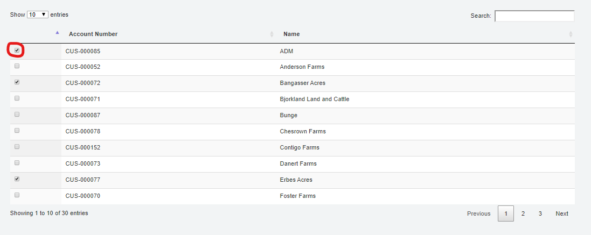

Scale Settings Configuration
Scale Settings Configuration
Settings
Under Application Configuration>Settings - Site: Choose a site from the drop down to assign site ID to the scale app - Number Prefix: Enter in the number ID of the Site in FO - Scale: Leave as default value of 1 - Company Name: Enter company name - Company Location/Address: Enter in correct company address - Company Carrier: Use this to Select the transport that is set up in F&O to trasnport Transfer Tickets: Company Name - Logo: Click on this to choose a picture file: Sizing IS being updated for logo - Printer Server: Address of the Printer Server, Default value is http://localhost:8081 - Printer Service: Address of the Printer Service, Default value is: http://localhost:4343/printerservice - Report File Location: Location of where PDF versions of tickets are stored. Default value is C:\Temp\Reports. Will have to create this file folder on your local machine. - Organization: DataAreaID of F&O, enter in 100 - IsDriverOn: If this is toggled on, all ticket types will default to having the flag on unless manually changed by the scale operator. If set to no, "Driver-on" flag will not be displayed on the ticket window. - Enable Spot Pricing: Further Development of Grain Functionality required. Field does not need to be filled in for agronomy. - Enable Disposition: Further Development of Grain Functionality required. Field does not need to be filled in for agronomy. - Scale Unit: Use drop down list to select LB - Max Weight: Enter in the max weight of the scale head. - Incr. Wt: This is what increments the scale head will display weights, i.e. 20 lbs.
Printer Settings
Under Application Configuration>Printer Settings.
This window is used to choose the correct printers for each of your scale heads at a location, and to choose a corresponding menu color to know which scale head you are working with in your window. The printer settings you choose in this window will then default in when you choose that scale on the Application start page.
Note: This setup is required. The printer selection can be changed to any printer on the Start page, but default printer setup is required to be able to print scale tickets.
To Set up the Printer Settings for a Scale:
- Choose the scale you want to set up from the drop down on the top of the page.
- Choose your printers for both your Tickets and BOL.
- Using the printer Type can change between a full page printout vs. a receipt printout.
- Choose the number of copies that you want to print with each completed ticket.
- Choose a background Color for that specific scale-head to make sure the correct scale is being used to complete and print tickets.
- Click save to complete these changes.
Customer Short List
Under Application Configuration>Customer Short list
Shows a list of all customers in the scale database in alphabetical order. Checking the Box next to a customer will put that customer into the drop-down list on all the scale ticket types in order to reduce load times because not all customers will be loading in the customer account drop-down.
- To add a customer to the short list manually, check the box next to their name, and click submit on the bottom left corner of the page.

Gross Quantity Settings
Under Application Configuration>Gross Quantity Settings
Manually set up in scale to show the gross quantity conversions of certain products, i.e. lbs to gallons.
To create a new gross quantity for a product: 1. Click create new on the top left of the page under INDEX 2. Choose the item ID for the correct item you want to add a quantity to 3. In Factor, enter the correct number. If you were to say a gallon of product is equal to 8 pounds, you would enter 8. The conversion is lbs/Unit of measure. The units of measure come from your FO system. 4. Choose your Commodity Unit of Measure. 5. Click Create.
To edit a previously created Gross quantity, click Edit next to the GQ that you want to change and when you have finished editing it, click the blue "Edit" button to save it.
To delete a previously created GQ, click delete next to the GQ. Confirm the delete by clicking the red "Delete" button.